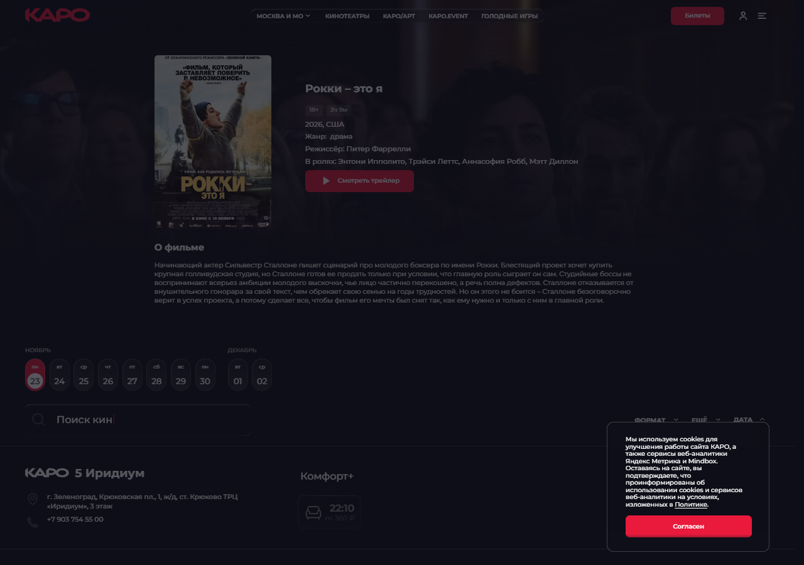
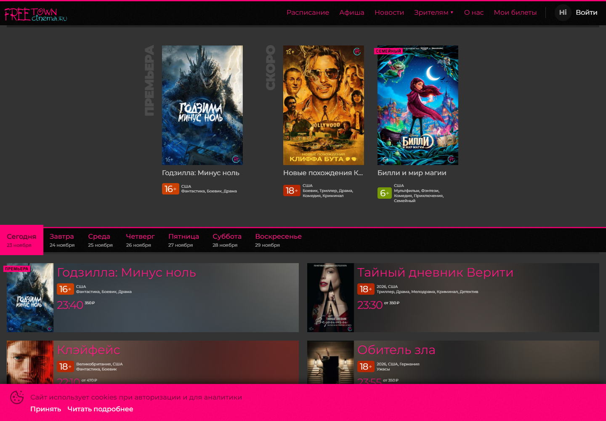
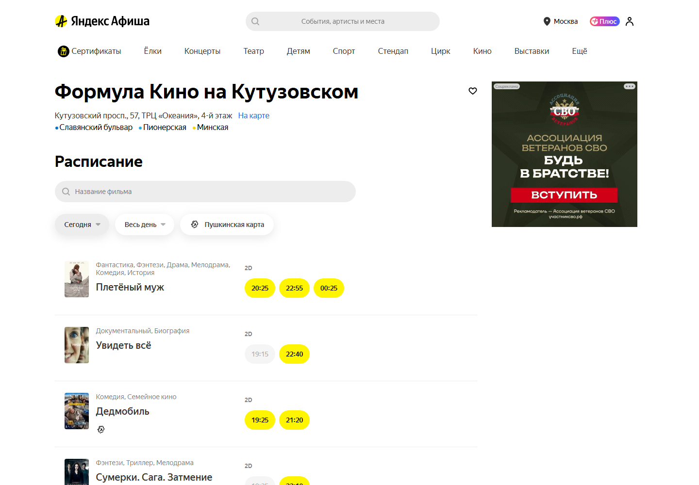
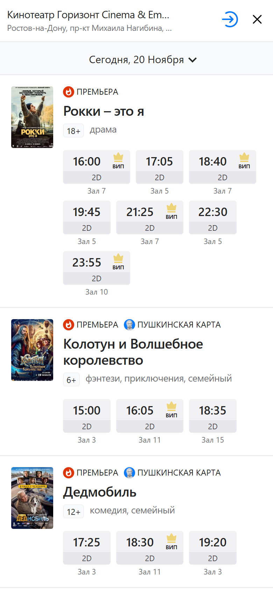
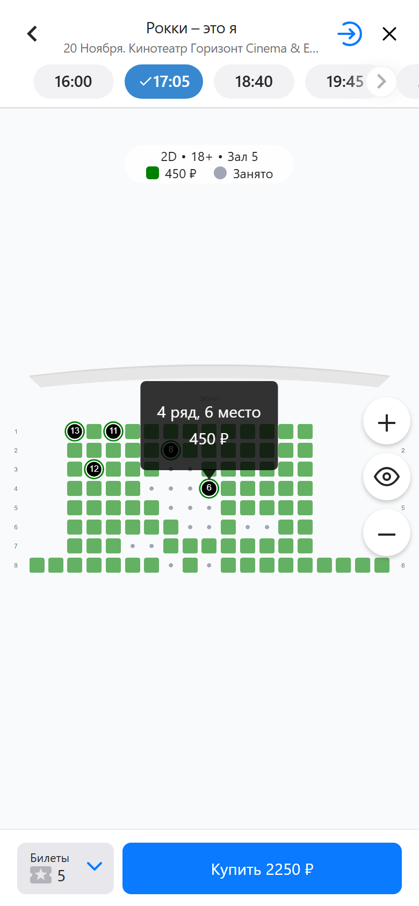
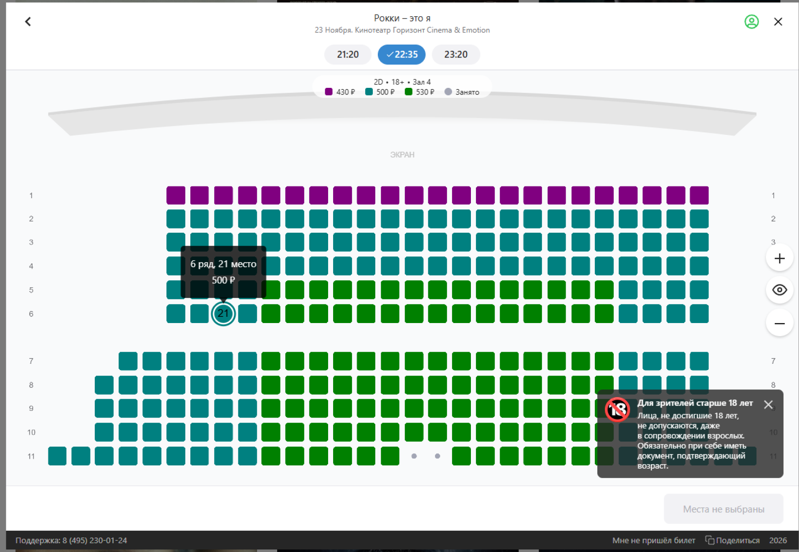
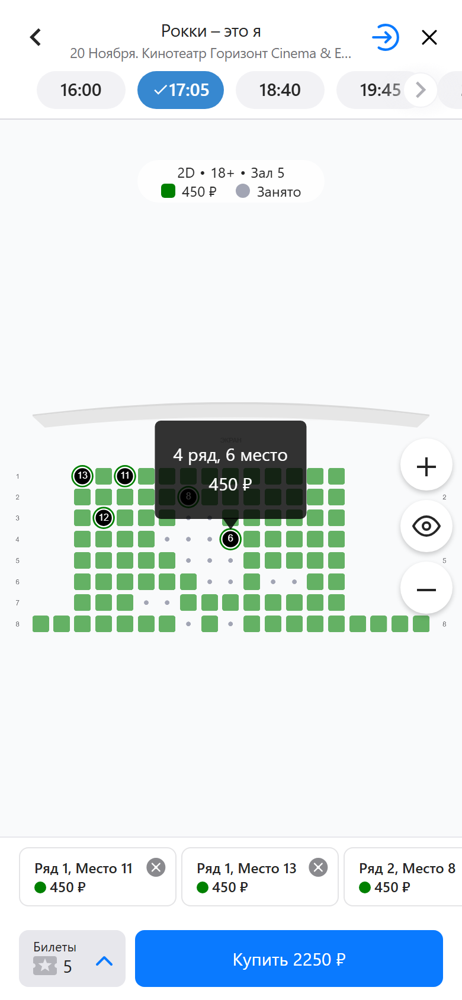
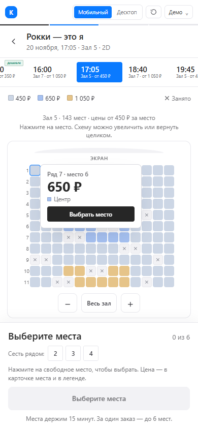
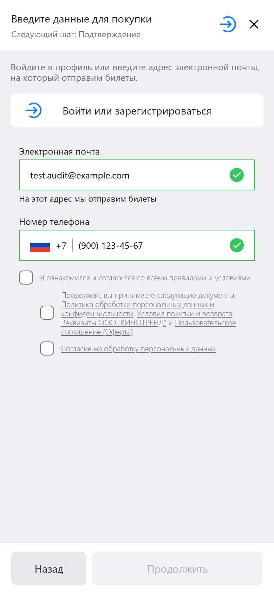
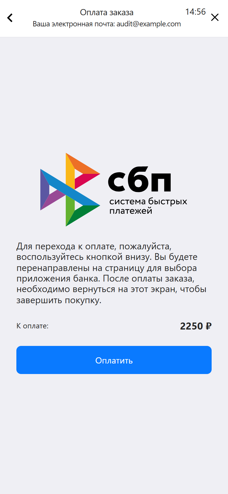

Смотрю по порядку, как идёт зритель: сеансы → карта зала → контакты →
способы оплаты → билет. На каждом шаге — как у конкурентов и что чинить. Оплата — финал,
поэтому блокер стоит там, где он и происходит.
5шагов
12проблем
1блокер
01Сеансы
02Карта зала
03Контакты
04Способы оплаты
05Билет
01
Сеансы
Сначала список — с него всё начинается.
Сравнил, как показывают сеансы четыре сервиса. Разница не в вёрстке,
а в том, что человек понимает до входа в зал: сколько стоит и какой это зал.

КАРО22:10 · от 360 ₽ · зал «Комфорт+»

Фритаун23:40 · 350 ₽ / от 350 ₽

Яндекс Афишавремя без цены; цена — в зале

Киноплан сейчасвремя без цены; VIP — только короной
Проблема шага
Цены нет там, где выбирают
В карточке сеанса — только время. Чтобы сравнить, человек должен зайти в зал и вернуться.
Решение: «от 450 ₽» при нескольких тарифах, точное число при одной цене; диапазон —
в подсказке.
02
Карта зала
Главный экран виджета. Здесь выбирают.
Сравнил карты Яндекса, Ticketland, Фритауна/p24 и нашего виджета.
Схема у всех узнаваема; разница — в цене, размере кресла и слоях поверх зала.

Что болит
Цена тонет, зал перекрыт
В тултипе цена одного веса с рядом и местом. Сверху — тултип, чипсы и список,
схема уходит под них. Кресло ≈13–14 px на 390.
СерьёзноЦена в тултипе не читается. У Яндекса карточка «Премиум · 970 ₽»; у нас цена сливается с адресом места.
СерьёзноКресло меньше пальца. Промах добавляет лишний билет и возврат.
МешаетТри слоя поверх зала. Схема не видна, соседей не проверить.
СерьёзноЗоны есть, но не везде. В больших залах — 430/500/530 ₽ и легенда; в проверенном Зале 5 — одна цена. Нужна система, а не разовое состояние.
Решение
Цена — главная, место — вторично
Цена 25 px, ряд и место — 11 px, зона — подписью. Кресло ≥24 px, зона ≥44 px,
одна нижняя панель вместо трёх слоёв.

Зоны уже есть
430 / 500 / 530 ₽ и легенда в большом зале. Задача — сделать это системой и не терять
в залах с одной ценой.

БылоРяд, место и цена — один вес. Взгляд не находит главное.

СталоЦена 25 px — первое, что видно. Ряд и место — 11 px.
03
Контакты
Первый шаг, где человек вводит данные.
У Яндекса это отдельный шаг с проверкой заказа; у нас — два экрана,
между которыми теряется контекст. Сравнение с рынком: гостевой путь есть у Яндекса,
у Фритауна — стена входа.

СерьёзноНет фильма, мест и суммы. Человек вводит данные вслепую.
Серьёзно«Продолжить» молчит. Кнопка серая, клик ничего не объясняет.
МешаетТри чекбокса без пометки обязательности; один текст противоречит себе.
Мешает«Войти» ведёт в афишу. Обещание без функции — убрать в MVP.
Решение
Один экран: сводка + контакты + оплата
Сводка заказа над формой, кнопка всегда активна и ведёт к первой ошибке,
гость проходит без входа.
04
Способы оплаты
Финал покупки — и единственный блокер.
Здесь виджет просит «вернуться на этот экран» после банка. Если человек
не вернулся — билет не пришёл, деньги списаны. Это не «мелкая ошибка», а конец сценария.

Блокер«Вернитесь на этот экран». Нет статуса и проверки оплаты; билет не гарантирован.
СерьёзноСБП выбрана за человека, карта — серый прямоугольник без брендов.
Мешает«14:56» без подписи: непонятно, что истекает.
МешаетНет фильма и мест на экране оплаты — только сумма.
Решение
Вернуть в виджет и показать статус
Возврат из банка, «Проверить оплату», блокировка повторной оплаты, затем билет.
Способы оплаты с брендами — после MVP.
05
Билет
То, ради чего всё делалось.
Экран успеха в живом виджете наблюдался: QR и номер заказа, без сеанса и мест. Реальный платёж не проводился.
Поэтому ниже — проектное предложение, а не «как сейчас».
QR в виджетеБилет видно сразу, не нужно искать письмо.
Копия на emailЕсли закрыл вкладку — билет всё равно есть.
Понятный статус«Оплата обрабатывается» и «Билеты готовы» — разные экраны.
Проектное предложение. В живом виджете после оплаты наблюдалась только
просьба вернуться на экран; успех и доставка билета не проверены без реального платежа.
Системность — это не «все экраны подряд», а один порядок: как идёт зритель.
Тогда видно, где рвётся сценарий, а не просто список замечаний.